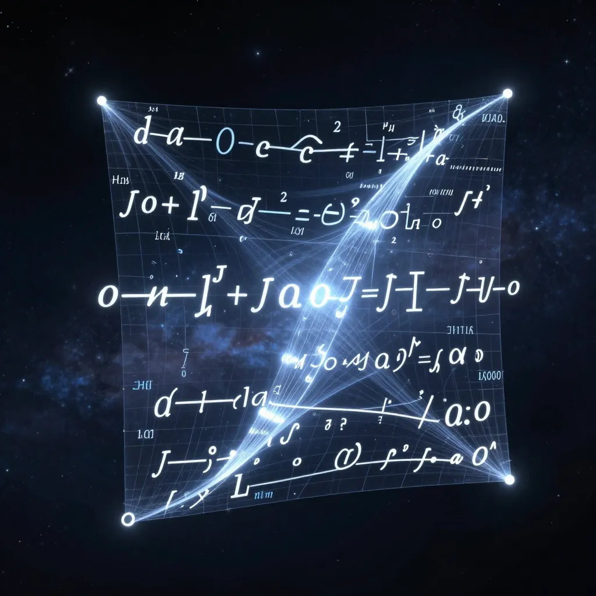

8 Dans les entrailles de la formule
8.1 Le tour révélé
Vous avez voulu voir. Voici.
Jusqu’ici, nous avons décrit la phrase de Gödel avec des mots : “une formule qui dit qu’elle n’est pas démontrable”. Nous avons expliqué son effet, analysé ses conséquences, admiré son élégance.
Mais les mots ne sont pas la chose. La phrase de Gödel est une créature mathématique — une suite précise de symboles, agencés selon des règles strictes. C’est cette créature que nous allons maintenant observer, comme un horloger ouvrant le boîtier d’une montre pour en contempler les rouages.

8.2 La formule qui se regarde elle-même
Voici la formule de Gödel, dans une notation simplifiée :
\[\forall x \neg \text{Dem}(x, \text{sub}(y, 13, y))\]
Ne fuyez pas. Nous allons la démonter pièce par pièce.
8.3 Décryptage symbole par symbole
| Symbole | Signification |
|---|---|
| \(\forall x\) | “Pour tout x” — le quantificateur universel |
| \(\neg\) | La négation — “il n’est pas vrai que…” |
| \(\text{Dem}(x, n)\) | “x est une démonstration de la formule numéro n” |
| \(\text{sub}(y, 13, y)\) | Le numéro de Gödel de la formule obtenue en substituant la variable 13 dans la formule y par y elle-même |
Assemblons ces pièces.
8.4 Pourquoi 13 ?
Le chiffre 13 n’a rien de magique.
Dans son système de codage, Gödel attribue un numéro unique à chaque symbole du langage formel : les connecteurs logiques, les quantificateurs, les parenthèses — et les variables. Le numéro 13 est simplement celui qu’il a assigné à une variable libre particulière, disons \(v\).
D’autres présentations du théorème utilisent des numéros différents — 17, 19, ou tout autre nombre selon le schéma de codage choisi. Ce qui compte, ce n’est pas le 13 lui-même, mais le fait qu’il désigne une variable libre : un emplacement vide qui attend d’être rempli.
Pensez-y comme à un formulaire administratif avec un champ “Numéro de dossier : ___“.
Le 13 désigne ce champ vide — un emplacement qui attend d’être rempli. La fonction \(\text{sub}\) remplit le blanc avec le numéro du formulaire lui-même.
C’est cette variable qui sera substituée par le numéro de la formule elle-même, créant ainsi l’auto-référence. Le formulaire finit par parler de lui-même.
8.5 Première lecture
La formule dit littéralement :
“Pour tout x, x n’est pas une démonstration de la formule obtenue en substituant la variable numéro 13 dans la formule y par y elle-même.”
En plus simple :
“Aucun x n’est une preuve de [quelque chose qui dépend de y].”
Mais que vaut y ?
8.6 Le tour de magie
Voici où réside le génie de Gödel.
La formule que nous venons d’écrire a elle-même un numéro de Gödel — appelons-le G.
Maintenant, Gödel choisit \(y = G\).
Que se passe-t-il ?
La fonction \(\text{sub}(G, 13, G)\) calcule le numéro de la formule obtenue en remplaçant la variable 13 par G dans la formule G elle-même.
Mais la formule G est précisément celle qui contient cette opération de substitution !
Le serpent se mord la queue. La formule parle d’elle-même.
8.7 Ce que la formule dit vraiment
Une fois la substitution effectuée, la formule affirme :
“Aucune démonstration n’existe pour cette formule-ci (celle que vous êtes en train de lire).”
Ou plus simplement :
“Je ne suis pas démontrable.”
C’est la phrase G dont nous parlons depuis le chapitre 4 — mais cette fois, nous voyons sa structure interne.
8.8 L’analogie du livre numéroté
Imaginons une bibliothèque où chaque livre porte un numéro.
Sur la page 13 du livre numéro 42, quelqu’un a écrit :
“Aucun livre de cette bibliothèque ne contient une preuve de ce qui est écrit à la page 13 du livre 42.”
Cette phrase parle d’elle-même — elle est ce qui est écrit à la page 13 du livre 42.
Si vous pouviez prouver cette phrase, vous auriez une contradiction : la preuve existerait, mais la phrase dit qu’aucune preuve n’existe.
Si vous ne pouvez pas la prouver, alors la phrase dit vrai — mais elle reste indémontrable.
C’est exactement le mécanisme de Gödel, traduit en termes de livres et de pages.
8.9 Le rôle crucial de la substitution
La fonction \(\text{sub}(y, 13, y)\) est le cœur du dispositif.
Sans elle, impossible de créer l’auto-référence. Car une formule ne peut pas directement mentionner son propre numéro — ce numéro n’existe qu’une fois la formule écrite.
La substitution contourne ce problème. Elle permet à une formule de dire : “prends mon propre numéro et insère-le ici”. L’auto-référence se fait en deux temps :
- D’abord, on écrit une formule avec une variable libre (la variable 13)
- Ensuite, on substitue cette variable par le numéro de la formule elle-même
C’est comme écrire une lettre qui dit : “Le contenu de cette lettre est [insérer ici le contenu de cette lettre].” La substitution remplit le blanc.
8.10 Trois niveaux de lecture
La formule de Gödel opère simultanément sur trois niveaux :
| Niveau | Ce qu’on voit |
|---|---|
| Syntaxique | Une suite de symboles manipulables mécaniquement |
| Arithmétique | Un énoncé sur les nombres (via le codage de Gödel) |
| Métamathématique | Une affirmation sur le système lui-même — “je suis indémontrable” |
C’est cette superposition qui rend la construction si puissante. Le système croit parler de nombres, mais il parle en réalité de lui-même.
8.11 Pourquoi ça ne crée pas de paradoxe
Souvenez-vous du chapitre 7 : le paradoxe du menteur s’effondre parce qu’il porte sur la vérité.
La formule de Gödel, elle, porte sur la démontrabilité.
\[\forall x \neg \text{Dem}(x, \text{sub}(y, 13, y))\]
Cette formule ne dit pas “je suis fausse” — elle dit “je suis indémontrable”.
Et une phrase peut parfaitement être vraie sans être démontrable. Ce n’est pas contradictoire — c’est simplement la preuve que le système est incomplet.
8.12 Ce que nous avons appris
| Concept | Ce qu’il faut retenir |
|---|---|
| La formule \(\forall x \neg \text{Dem}(x, \text{sub}(y, 13, y))\) | Structure technique de la phrase de Gödel |
| La fonction sub | Permet l’auto-référence en substituant le numéro de la formule dans elle-même |
| Les trois niveaux | Syntaxe, arithmétique et métamathématique se superposent |
| Pas de paradoxe | Parce qu’on parle de démontrabilité, pas de vérité |
8.13 Le mécanisme révélé
Vous avez maintenant vu le mécanisme interne de la construction de Gödel.
Ce n’est pas de la magie — c’est de l’ingénierie logique d’une précision redoutable. Gödel a trouvé le moyen de faire parler l’arithmétique sur elle-même, de transformer des énoncés sur les formules en énoncés dans le langage des nombres.
La cathédrale des mathématiques contient bien des salles inaccessibles. Nous avons pu jeter un œil par le trou de la serrure.
8.14 Vers la question ultime
Mais une question demeure — peut-être la plus importante de toutes.
Nous avons vu ce que les systèmes formels ne peuvent pas faire. Nous avons vu qu’aucun ensemble fini de règles ne peut capturer toutes les vérités de l’arithmétique.
Et les machines ? Et nous ?
Une machine n’est-elle pas, au fond, un système formel incarné — un ensemble de règles qui s’exécutent ? Et si c’est le cas, que nous dit Gödel sur ce qu’aucune machine ne pourra jamais accomplir ?
Quant à l’esprit humain — est-il lui aussi prisonnier de ces limites ? Ou possède-t-il quelque chose que les systèmes formels n’ont pas ?
C’est la question qui nous attend au dernier chapitre.